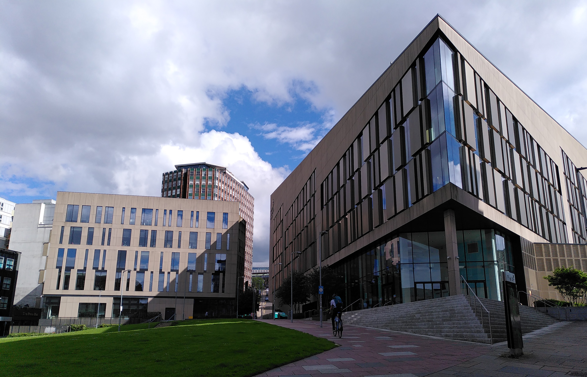
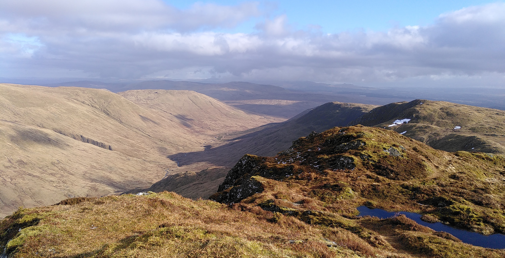
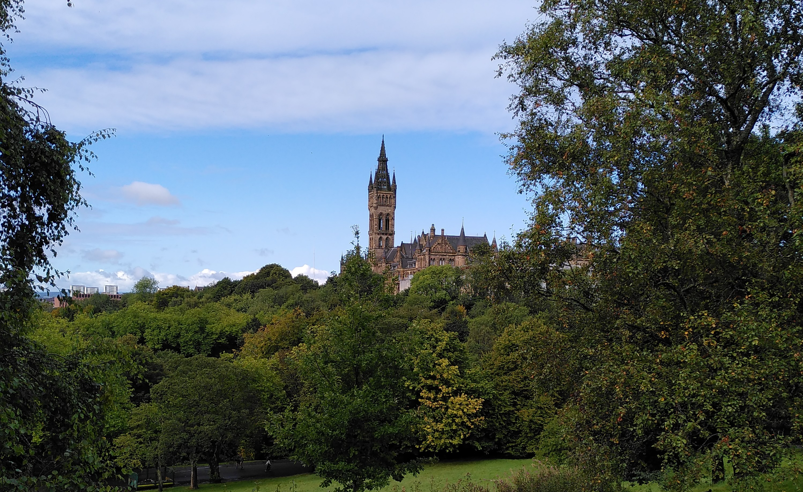
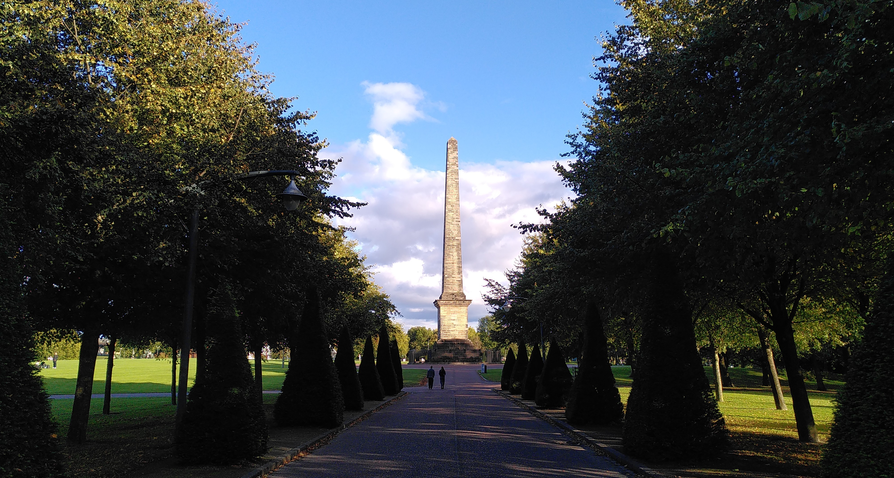
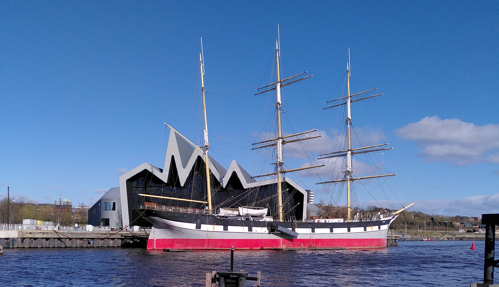

Date and Venue
The Mathematically Structured Programming Group at the University of Strathclyde offers to host the 18th Conference on Interactive Theorem Proving (ITP 2027) in Glasgow, Scotland. The university's city centre campus is easily accessible and close to all amenities.
Date
Our suggestion is to organise ITP over 4 days (with 1 or 2 days of workshops at either end) either towards the end of July or the start of August in order to be co-located with the 2027 edition of the Scottish Programming Languages and Verification summer school to be held at Heriot-Watt University (Edinburgh, Scotland).
Venue
Because this date falls outside of the main university terms, the main conference and affiliated events will take place in proper lecture theatres in the recent Learning & Teaching building where TYPES 2025 was successfully hosted. This modern building comprises accessible bathrooms, a nearby reflection room, and a breast feeding and baby changing room.
Social activites and excursion
In addition to the conference programme, we propose to organise a welcome reception for participants to get to know each other on day 1, an excursion (e.g. to a nearby Highlands loch) and a conference dinner.
Local Research Landscape
The MSP group has well established research programes in functional programming, type theory, logic, and applied category theory.
More widely, Scotland has a very active research communitee with a particularly strong focus on programming languages research, coordinated via the Scottish Programming Languages Institute.

Organisation
Organising Committee
In the spirit of previous installments of ITP, the Program Committee will be constructed to be representative of all aspects (both technical and non-technical) of diversity of the community.
Recent conferences organised by the MSP group in Glasgow
Travel
Glasgow is the largest city in Scotland and is thus quite well connected.
By train: The University of Strathclyde is located short walks away from both Glasgow Queen Street train station (five minutes) and Glasgow Central train station (10 minutes). See National Rail for train times and connections. Trains from London take 4.5 hours. Another option is to travel overnight on the Caledonian Sleeper from London, which arrives in Glasgow 7.30am (so plenty of time to get a shower in the train station and a nice breakfast before the conference starts!). If you are arriving from the continent, you can take the Eurostar to London, and then take another train to Glasgow (see The Man in Seat 61 for more information).
By plane: The closest airports are Glasgow International Airport (30 minutes bus connection via the bus 500 to Queen Street station) and Edinburgh Airport (1 hour bus connection via the Citylink Air to Buchanan Bus Station).
⚠️ Visas: Check if you require a UK visa or an electronic travel authorisation (ETA) on the UK Government website. Note that EU citizens will need to apply for an ETA, and that you need to do this at the latest a few days before travelling. If you need to apply for a visa, we are happy to supply a support letter for you after you have registered for the conference.
Accommodation
Glasgow is regularly hosting large international events (COP26 in 2021, the Commonwealth games in 2026) meaning there is an abundance of hotels covering all cost points.
There are many hotels in and around the city centre, as well as some hostels. Some good hotels very close to the university are:
Tourism
The city of Glasgow
Glasgow is a vibrant and compact city with a range of cultural attractions, including many museums and art galleries, such as the stunning Kelvingrove Art Gallery and the award-winning Riverside Museum. Visitors can explore the works of artist and architect Charles Rennie Mackintosh, walk the city centre Art Mural Trail or take a stroll through one of the many parks and green spaces. Glasgow is a UNESCO City of Music with over 150 live music events per week, and was voted ‘world’s friendliest city’ by Rough Guides in 2022.
Food and drink
The Glasgow food scene offers something for everyone, from the restaurant inventing the Chicken Tikka Masala and traditional scottish food such as haggis, neeps and tatties to fine dining. Similarly Glasgow is renowned for its pub culture, with a large variety of options from traditional whisky pubs to night clubs and live music venues.
Scottish highlands and islands
Glasgow has excellent travel connections to both the highlands and islands of Scotland, world famous for their culture, whisky distilleries and natural beauty. Good hiking destionations can easily be reached already on a day trip from Glasgow by train or bus.



